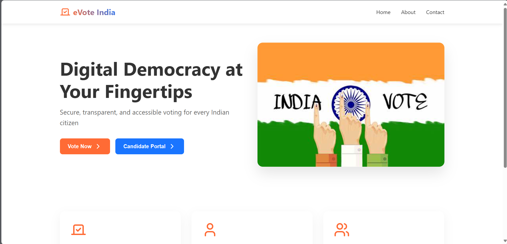

Online Voting System
Online Voting System made with html css javascript mern . This the website which is used to case your vote online form anywhere you want with internet connectivity.
Online Voting
HTML
CSS
JavaScript
SQL